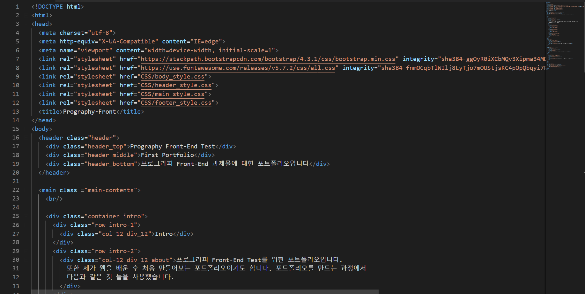
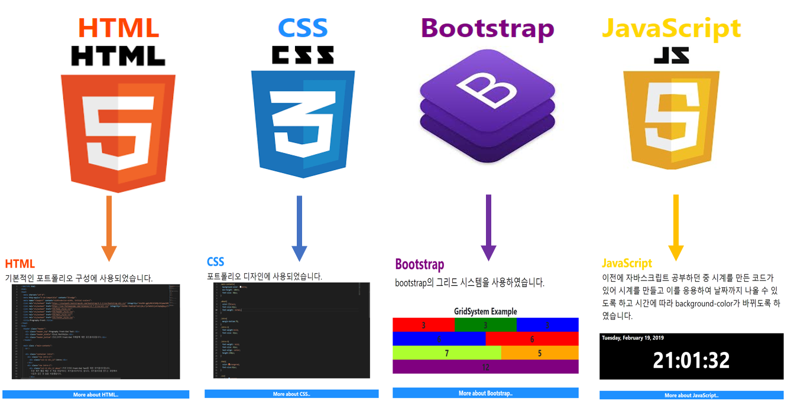
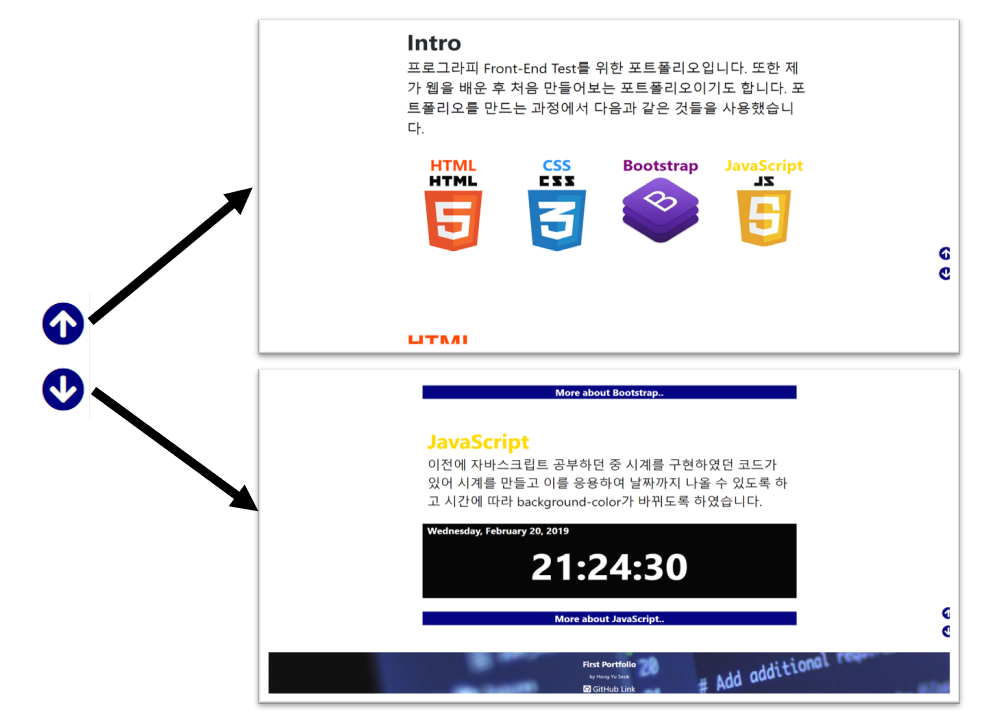
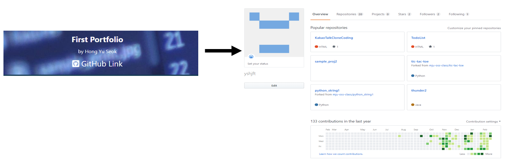
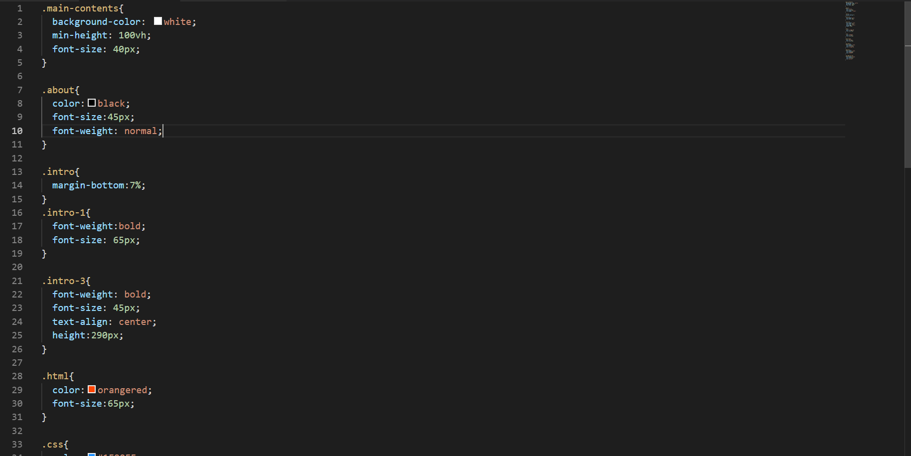
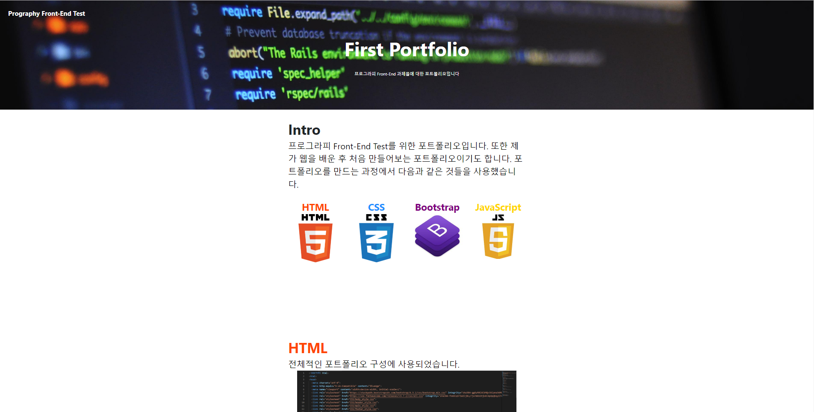

Intro
프로그라피 Front-End Test를 위한 포트폴리오입니다.
또한 제가 웹을 배운 후 처음 만들어보는 포트폴리오이기도 합니다. 포트폴리오를 만드는 과정에서
다음과 같은 것들을 사용했습니다.


HTML
전체적인 포트폴리오 구성에 사용되었습니다.

아래와 같이 HTML, CSS, Bootstrap 그리고 JavaScript 이미지를
클릭하게 되면 해당 내용에 대해 다루는 부분으로 이동하게 됩니다.

아래에서 보이는 것과 같은 이모티콘 중 위쪽 방향을 향하는 화살표를 클릭할 경우 포트폴리오의
Intro 부분으로 이동하며, 아래쪽 방향으로 향하는 화살표를 클릭하게 되면 포트폴리오의 가장
하단으로 이동하게 됩니다.

아래와 같은 div를 클릭할 경우 해당 내용에 대한 정보를 줄 수 있는 사이트로 이동하게 됩니다.
Github Link라는 부분을 클릭하면 저의 GitHub로 이동할 수 있습니다.

CSS
포트폴리오 디자인에 사용되었습니다.

Bootstrap
Bootstrap의 그리드 시스템을 포트폴리오 제작에 사용하였습니다. 아래는 그리드 시스템의 예시를 제작한 것입니다
GridSystem Example
3
3
3
6
6
7
5
12
해당 포트폴리오는 전반적으로 그리드 시스템을 사용하여 제작하였습니다.

JavaScript
이전에 자바스크립트 공부하던 중 시계를 구현하였던 코드가 있어 시계를 만들고 이를 응용하여 날짜까지
나올 수 있도록 하고 시간에 따라 background-color가 바뀌도록 하였습니다.
?/?
00 : 00